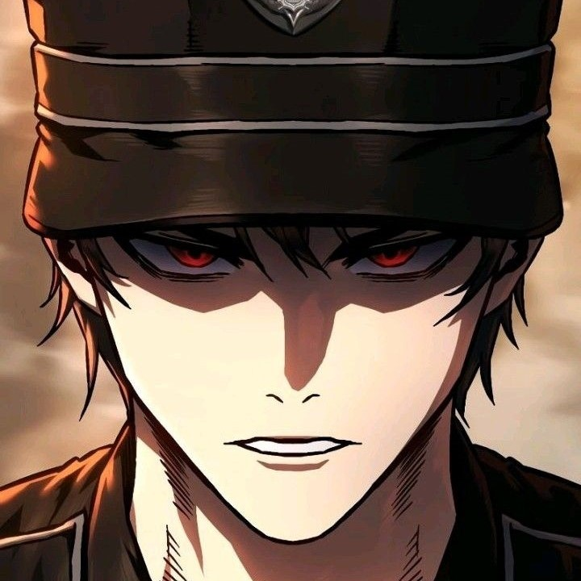

ChildhoodFriend Complex
Ha-neul and Mincheol have been childhood friends for all of their lives, but their relationship takes on a whole new dynamic when they undergo a series of unexpected events. Although they vowed that they'd never be romantically attracted to each other, they just might be proven wrong, especially when things start to escalate and neither can predict where they'll end up.

Love 4 a Walk
Pam's heart has been broken one too many times, and being dumped over her untruly dog Bob was the last straw. Now determined to care for Bob on her own, how long can this hopeless romantic resist falling for her mysterious yet compassionate neighbor Tyler, especially when he's so good with dogs?
Bad Thinking Diary
Min-ji and Yu-na have been best friends since high school, and Min-ji counts herself lucky to have someone so pretty and kind in her life. She just knows that when she finally starts dating, she wants it to be with someone as amazing as Yu-na! Everything seems perfect, but things start to change when Min-ji begins having dirty dreams… ones starring Yu-na herself! Min-ji chalks it up to her own loneliness, but for some reason Yu-na starts acting strangely when Min-ji tells her about it… Is she upset, or could it be that Yu-na has harbored feelings for Min-ji all along? From unrequited love, excitement, and obsession, just where will these bad thoughts lead them?

Secret Crush
What's the probability of someone you have a crush on having a crush on you? What'll happen to these two secret lovers? Will they ever find out that they are, in fact, in love with each oher?

The Guy Upstairs
Rozy find her neighbor, the guy who lives upstairs a little bit too suspicious.
Look Alike Daughter
"I think my mother is a killer." Gil So-Myeong, who has excellent grades, good manners, and an exemplary child, has lived as a perfect daughter according to the standards her mother demanded. However on the day that his younger brother rises from the river as a corpse, a terrifying suspicion rises in So-Myeong's mind. A cruel mother-daughter thriller between a mother who tries to get rid of eveything that interferes with her child's life andd a daughter who tries to escape from her!

My Landlady Noona
Hari, who is kind and pretty, always takes care of Min-woo, who lives in her house. In fact, Min-woo calls Hari an "auntie" and not even an older sister.

Wind Breaker
Jay's the perfect student. He's got straight A's and he's the student body president. But after being coerced into joining the school's biking team, the Hummingbird crew, he discovers a whole new world outside of studying. What new advertures will he face outside the comfort of his textbooks?
The Remarried Empress
Navier Ellie Trovi was an empress perfect in every way--intelligent, courageous, and socially adept. She was kind to her subjects and devoted to her husband. Navier was perfectly content to live the rest of her days as the wise empress of the Eastern Empire. That is, until her husband brought home a mistress and demanded a divorce. "I accept this divorce.. And I request an approval of my remarriage." In shocking twist, Navier remmaries another emperor and retains her title and childhood dream as empress. But just how did everything unfold?
Stealing Her Place
Yeseul’s arrival at her new school is anything but perfect. Not only does she make a terrible first impression, but she immediately becomes a target for bullying when the most popular girl in school, Sohui, notices their strikingly similar appearance. Despite being bullied and harassed every single day, Yeseul is determined not to back down. She knows that she’s just as attractive as Sohui… and that it’ll be a breeze to steal everything from her.

Operation True Love
It’s hard dating someone who won’t give you the time of day. Su-ae Shim knows that better than anyone, having dated her indifferent boyfriend, Minu Kang, for years. She sometimes wishes she could be more like her charismatic stepsister, Ra-im, who seems to have it all. But life takes a turn for the weird when Su-ae discovers Jellypop, a sentient flip phone, in her locker. Jellypop has a lot to say about her love life, especially as Su-ae drifts further away from Minu and finds herself running into Minu’s friend, Eunhyeok. Add to the mix a growing suspicion that Minu and Ra-im might be more than friends, and Su-ae might need a miracle to navigate the ups and downs of high school romance!
Teenage Mercenary
At the age of eight, Ijin Yu lost his parents in a plane crash and became stranded in a foreign land, forced to become a child mercenary in order to stay alive. He returns home ten years later to be reunited with his family in Korea, where food and shelter are plenty and everything seems peaceful. But Ijin will soon learn that life as a teenager is a whole other feat of survival. With only one year of high school left, Ijin must master new tactics to maneuver his way around the schoolhouse battleground. Can he survive a year of high school? Or rather, will the school be able to survive him?
Tears on a Withered Flower
Na Hae-soo's life unravels when her husband betrays her with an affair, leaving her burdened with debt and losing their child. In a devastating blow, she witnesses him with a younger woman. Broken and despondent, Na Hae-soo feels her life crumbling around her.
Jinx
Physical therapist Kim Dan has been down on his luck for as long as he can remember. Between an ailing grandmother, menacing loansharks, and an old boss making it almost impossible for him to find work, Dan is truly running out of options. Naturally, it feels like a dream come true when he’s finally hired to treat top-paid MMA fighter Joo Jaekyung, especially when the man then calls him out for a treatment the night before a match with an oh-so-tantalizing offer of five thousand dollars. He claims to have a “jinx” in need of a particular type of “treatment," but it's one that Dan isn't quite prepared to offer… You see, Jaekyung may be a beast in the ring, but he’s even rougher in the bedroom, and Dan’s not sure he can survive Jaekyung at his most primal. Nevertheless, the promise of much-needed cash has Dan agreeing to this ill-fated deal... Could a night together be the thing to help break this jinx once and for all?

Ruthless
The most important life lesson Seo Jimin has ever learned was from her parents: Never get too absorbed to someone else. That’s why this young lady plays by her own law of bedroom, refusing to stay with the same person for too long. She gets all the pleasure of having a good time without the messiness of a relationship.. So what if her rules have earned her a certain reputation around uni? At least no one gets hurt this way, especially her. But when ridiculously gorgeous wolfy Female moves in next door, Jimin is not sure how long her vow against emotional intimacy can last.

A Demon's Wish
Doya Seo, a demon, is one day captivated by a mysterious dream. That same day, he happens upon Wish So, a new freshman. Curiously, each moment their paths intersect, Doya finds himself engulfed in a perplexing whirl of emotions and physical sensations that his demonic sensibilities fail to decipher. Meanwhile, Wish finds herself amidst a flurry of events after being invited to the home of famous actor Jaehyeon Woo. In a world where the supernatural coexists with humanity, and caught between the devilish charm of Doya and Jaehyun’s allure, will Wish be able to navigate her school life without trouble?
Made of Stardust
Kalisa is a young star who has fallen from the heavens and finds herself in an entirely new world where she is held captive by a young king. All alone and with no memory of her past, Kalisa escapes from the kingdom to find a way back home. With the help of new friends that she meets along the way, Kalisa embarks on a journey to break the curse she's under and return home to the stars. However, will she be able to do all this before the king finds her?

The Executioner
A hero should never kill anyone, not even the worst of villains. Gangyu could never understand why his team of heroes lived by those words, but he tried his best to do the same… until the villain who wiped out his squad killed his brother in prison. Gangyu breaks his vow and enters Ruculus with permission to kill as the prison’s executioner. Now, he must fight his way through the villains to kill the worst of them all.

Maybe Meant To Be
Jia Han, a 32-year-old freelancer with no work, is tired of her parents nagging her to get married and finally move out. When she runs into her childhood friend, Mincheol Jin, who is also feeling the same pressure from his parents, she blurts out that they should just get married to solve both of their problems. Little did she know he’d accept her suggestion, and she suddenly finds herself thrust into marriage. A story of an unexpected romance that’ll have you scrolling for more!